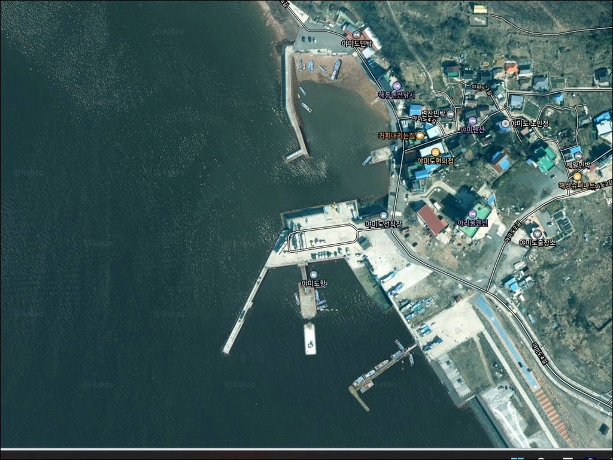
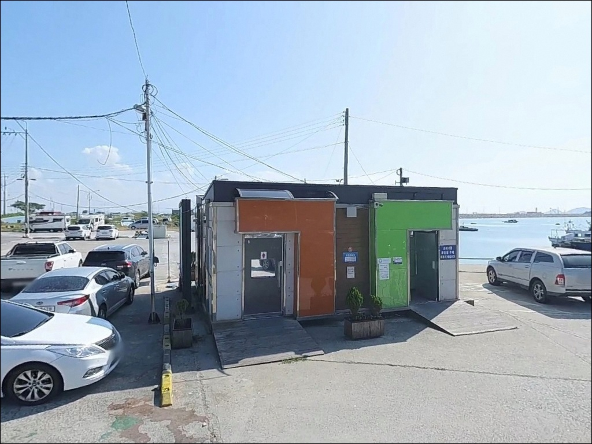
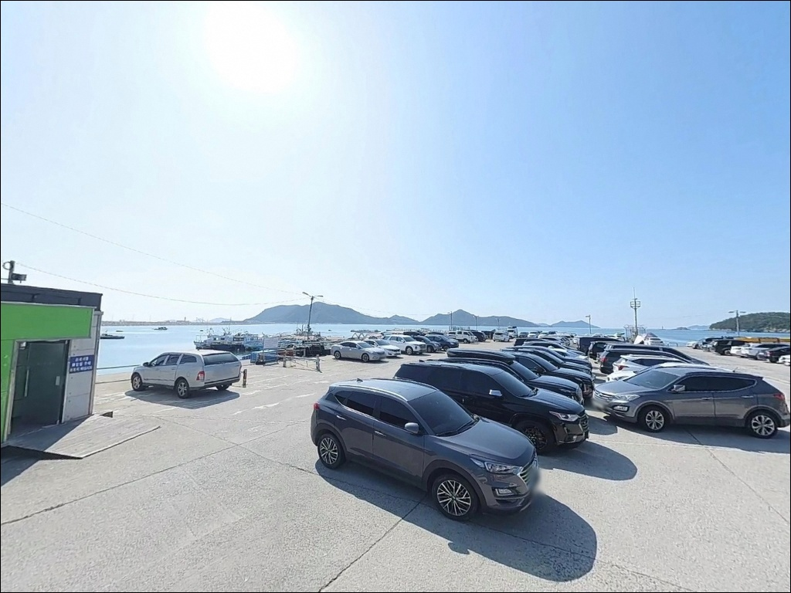
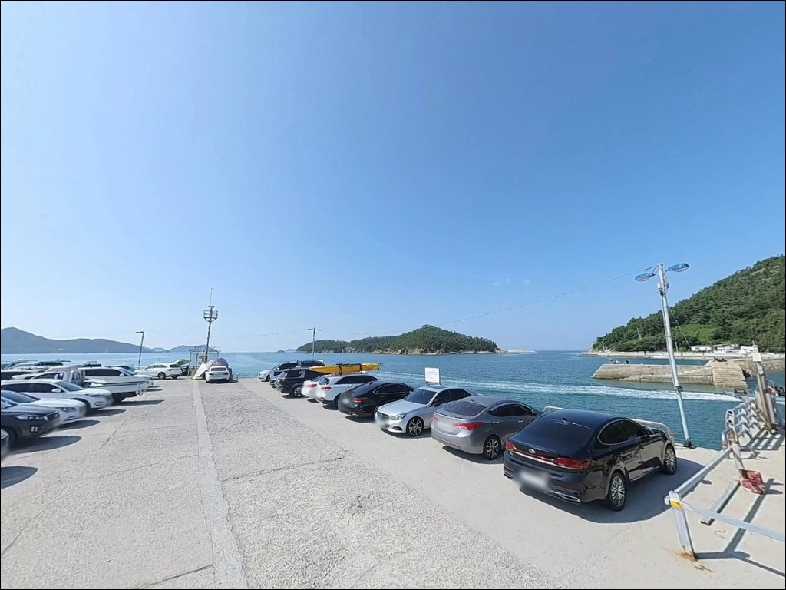
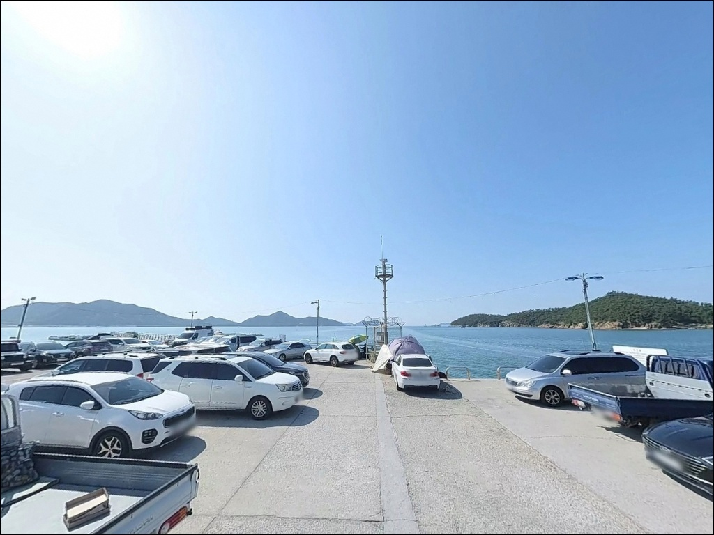
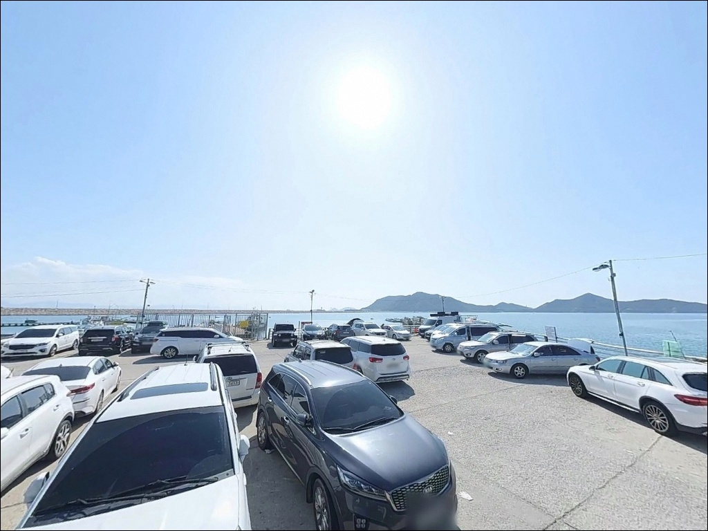
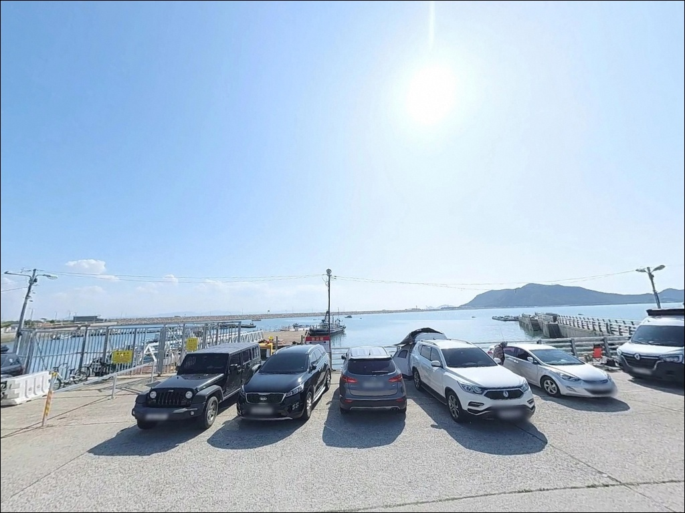
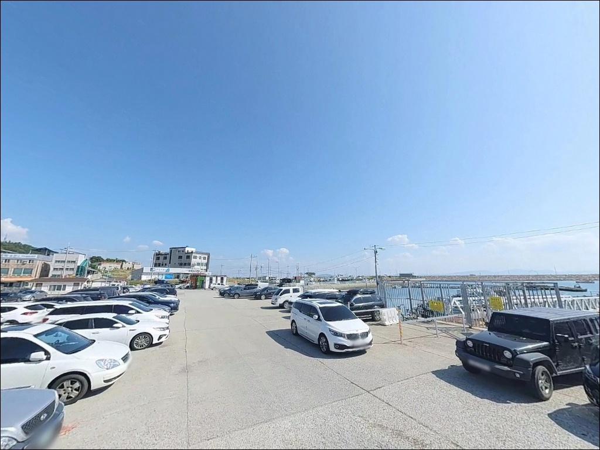
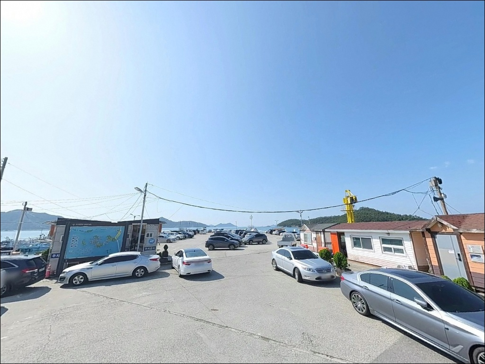

야미도항, 야미도선착장, 야미도 전북 군산시 잔잔한 물결과 어울리는 차박, 낚시 한적한 포인트
이 페이지에는 광고(제휴 링크 포함)가 있으며, 광고 링크를 통해 구매하면 운영자가 판매 수익 또는 수수료를 받을 수 있습니다. 포인트 사진: 카카오맵 스카이뷰·로드뷰. 이 페이지의 지도·사진 이미지는 카카오맵의 실제 서비스 이미지와 다를 수 있습니다.


야미도항
전북 군산시 옥도면 야미도리 148
야미도항 방문에서 가장 자주 나오는 실수는
물때를 확인하지 않고 출발하는 것입니다.
새만금 배수갑문과 고군산군도 수로가 겹치는 이 해역은
사리 전후 조류가 급격히 세지며,
타이밍을 놓치면 어떤 채비를 써도
바닥에서 제대로 올라오지 않습니다.
새만금방조제 개통 이후 육지와 도로로 연결된 야미도항은
고군산군도 서쪽 초입에서 서해를 마주하는 위치입니다.
남방파제 45m와 물양장 3,658㎡ 규모의
어촌정주어항으로 지정된 이곳은
선상낚시 출조 거점인 동시에
방파제와 물양장 연안에서의 직접 낚시도
가능한 포인트입니다.
이 글은 야미도항의 진입 환경, 지형 기반 낚시 여건,
물때 판단 기준, 차박 체류 조건에 집중합니다.
조황 단정이나 특정 어종 보장은
이 글의 범위에 포함되지 않습니다.

1. 진입 동선과 포인트 접근성
새만금방조제가 야미도와 육지를 도로로 연결하고 있어
차량 진입 자체는 어렵지 않습니다.
방조제 구간은 포장도로로 정비되어 있고
경사가 거의 없어,
중형 차량까지는 큰 어려움 없이 진입할 수 있는 구조입니다.
야미도 내부 도로는 소규모 어촌 마을 규모의 폭으로 조성되어 있어
항 방향으로 들어갈수록 여유 공간이 줄어드는 구간이 있습니다.
대형 SUV나 캠핑카 구성이라면
출발 전 지도로 진입로 폭과 회차 공간을
미리 확인하는 것이 안전합니다.
주차는 선착장 전면 광장과 해안 도로변을
활용하는 방식이 일반적입니다.
어선과 낚시배가 드나드는 항구인 만큼
주차 공간에 어민·출조 차량이 함께 있는 경우가 많습니다.
어선 이동 동선을 막지 않는 자리가 우선이며,
선착장 전면보다 도로변 측이
장시간 주차에 더 적합한 편입니다.

2. 차박 환경과 야간 체류 여건
야미도는 면적 0.41km²의 소규모 섬으로,
민가가 분산 배치된 어촌 마을 구조입니다.
야간에는 차량 통행이 줄어드는 편이지만,
선상낚시 출조 시간대인 새벽에는
차량 이동이 다시 잦아지는 구조입니다.
차박 자리를 선착장 전면에 잡으면
이 시간대에 수면 방해를 받을 수 있습니다.
선착장 주변은 어항 시설 조명이 있는 편이며,
항 외곽 쪽으로 갈수록 어두운 구간이 생깁니다.
개인 조명 장비는 필수로 챙겨야 하고,
서쪽 방향으로 탁 트인 해안 구조상
일몰 무렵 서해 노을이 잘 보이는 위치입니다.
낚시를 마친 뒤 조용히 하룻밤 머무는 용도로는
어울리는 포인트입니다.
다만 물양장 구역은 어업 활동 공간이라
장시간 차량을 배치하기에 적합하지 않습니다.
항 진입부 쪽 도로변 공간이
어민 활동을 방해하지 않는 선택입니다.


3. 주변 편의시설 및 인프라 현황
야미도에는 펜션 1곳, 민박 9곳이 운영 중이며,
항 주변으로 식당과 소규모 상가가 있습니다.
선상낚시 출조점이 정식 운영되고 있어
기본적인 낚시 관련 편의는
항 인근에서 어느 정도 해결이 가능한 편입니다.
편의점이나 대형 마트는 반경 3km 내에서
확인된 정보가 없습니다.
비응항 방향으로 방조제를 타고 이동하면
군산 시내 쪽 인프라를 이용할 수 있어,
얼음·연료·낚시 소품은 출발 전에 준비해두는 것이
현실적인 방법입니다.
응급 상황 발생 시 군산 시내까지 거리가 있으므로
비상약품과 수분은 기본으로 챙겨야 하고,
출조 전 기상 특보 확인도 반드시 필요합니다.

4. 조황을 가르는 물때 — 진입 전 반드시 확인할 것
야미도항 방문에서 가장 먼저 챙겨야 할 것은
물때 확인입니다.
새만금 배수갑문 영향권에 위치한 이 해역은
사리 전후 조류가 강하게 흘러
채비 컨트롤이 어려워지는 구조입니다.
바다타임에서 야미도 또는 군산 기준 물때를 확인하고,
끝들물에서 초날물 타이밍을 겨냥해
출발 시각을 맞추는 것이 기본 전략입니다.
물때가 맞는 타이밍에 야미도항을 찾으면
조류 흐름이 살아 있어 낚시 여건이 달라집니다.
서해 특성상 기상 변화가 빠르고
너울과 강풍이 갑작스럽게 올라오는 경우가 있습니다.
기상청 예보를 출발 당일 아침에 다시 한번 확인하고,
파고와 풍속 수치에 따라 방파제 끝단 진입 여부를
현장에서 최종 결정하는 것이 안전합니다.
석축 지형 특성상 밑걸림이 발생하는 구간이 있으므로
여분 채비를 넉넉하게 챙기는 것이 좋습니다.
어선과 낚시배가 드나드는 공간이라
구명조끼는 방파제와 선착장 모두에서 착용이 기본입니다.

5. 지형 기반 낚시 여건 분석
야미도항의 핵심 구조는 남방파제 45m와
물양장 3,658㎡입니다.
항 앞쪽에 소야미도가 자리해
파도와 바람을 일부 차단해주는 위치 구조 덕분에
내항은 비교적 잔잔한 편이며,
외해 방향으로 나갈수록 조류 흐름이 살아나는 구조입니다.
방파제 외측 끝단은 조류 변화가 집중되어
원투낚시와 릴찌낚시 반응이 달라지는 자리입니다.
물양장 주변 석축 바닥은 어류 은신처 역할을 하지만
밑걸림이 발생하는 구간이 섞여 있습니다.
야미도 해안선이 3.5km에 이르는 만큼
항 외곽 석축 지형도 탐색 대상이 됩니다.
만조 기준 수심은 7~8m 안팎으로 알려져 있으며,
간조 시에는 석축 아래 지형이 드러나는 구간이 생깁니다.
서해 고군산군도 특성상 갑오징어·주꾸미 시즌이
가을철에 강하게 형성되는 편이며,
우럭·노래미·농어·숭어·학공치·붕장어 등
연안 어종도 이 지형에서 기대해볼 수 있습니다.
출조 전 최신 조황은 반드시 검색해 보시기 바랍니다.


6. 포인트에 어울리는 낚시 스타일
야미도항 지형 구조에서 가장 기본이 되는 방식은
원투낚시입니다.
물양장 주변 바닥층을 겨냥해
크릴이나 청갯지렁이 미끼를 멀리 던진 뒤
입질을 기다리는 방식으로,
조류가 느려지는 정조 타이밍에 유효합니다.
도다리·붕장어·우럭이 이 방식과 잘 맞습니다.
방파제 외측 수층을 타는 릴찌낚시도
이 포인트 구조에 어울립니다.
내항보다 조류 흐름이 있는 외측 방향에서
수층을 조절하며 감성돔·숭어를 노리는 방식이며,
끝들물 타이밍에 입질 빈도가 올라가는 편입니다.
농어 루어는 야간 또는 이른 새벽
방파제 끝단에서 시도해볼 만한 스타일입니다.
웜 채비나 미노우 계열로 조류가 부딪히는
끝단 주변을 탐색하면
반응이 올라오는 구간을 찾을 수 있습니다.
가을 시즌에는 에깅 방식으로
갑오징어·주꾸미를 노리는 방법이
이 해역에서 가장 반응이 좋은 스타일입니다.
9월부터 11월까지가 서해 고군산군도 권역의
두족류 시즌 핵심 구간이며,
야미도항은 이 시기에 선상낚시 출조도 함께 활발해집니다.

7. 대안 포인트와 플랜 B 동선
야미도항 자리가 여의치 않거나
조류 조건이 맞지 않을 때는
차량으로 5분 거리인 신시도항이 첫 번째 대안입니다.
야미도항과 지형 구조가 비슷하고
석축·방파제에서 원투·에깅 모두 운용할 수 있어
동선 낭비 없이 이어갈 수 있습니다.
군산 최대 선상낚시 출조 거점인 비응항은
야미도항에서 약 10km 거리에 있습니다.
선박 수와 채비·얼음·먹거리 등
현장 편의 인프라가 잘 갖춰진 곳으로,
선상낚시로 방향을 전환할 때 가장 유력한 선택지입니다.
차박 위주로 이동을 원한다면
새만금방조제 상부 도로변의
해넘이쉼터·소라쉼터 등 쉼터 주차 공간이 대안이 됩니다.
주차 공간이 넓고 서해 조망이 열려 있어
낚시와 체류를 함께 고려한 동선으로 활용하기 좋습니다.

물때 하나가 야미도항의
하루 낚시를 전부 바꿉니다
원투낚시나 에깅을 즐기는 낚시인이라면
야미도항의 지형 조건은 충분히 맞는 구조입니다.
물양장 주변 바닥층 공략과
가을 두족류 시즌을 겨냥한 에깅 모두
이 포인트에서 시도해볼 이유가 있습니다.
선상낚시 출조 거점으로도 활발하게 운영 중이라
다양한 방식으로 활용 가능한 곳입니다.
반면 물때 계산 없이 사리 전후에 도착하거나,
어선 동선을 고려하지 않고 자리를 잡으면
낚시와 차박 모두 불편해지는 상황이 생깁니다.
물때 확인, 자급 준비, 어선 동선 파악,
이 세 가지를 갖추고 찾아가면
야미도항은 고군산군도 권역 안에서
접근성이 가장 좋은 포인트가 됩니다.
새만금방조제 너머 서쪽 해넘이를 보며
차 안에서 하룻밤 쉬어가는 차박 여행자라면,
낚시 마감 후 선착장 인근에서
조용한 서해 밤을 경험하기에도 나쁘지 않은 곳입니다.